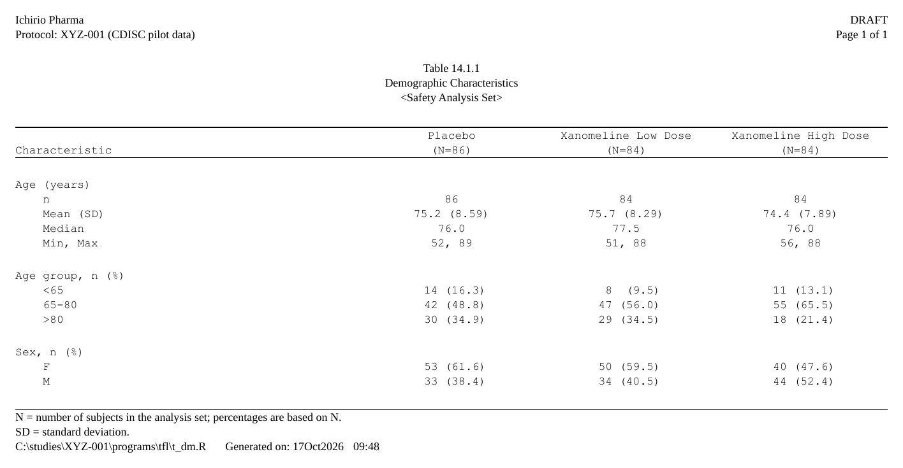
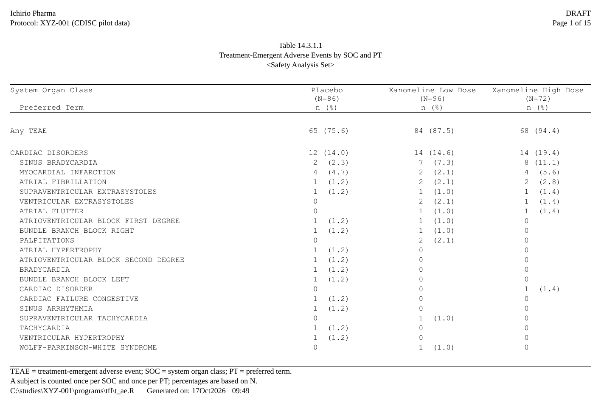
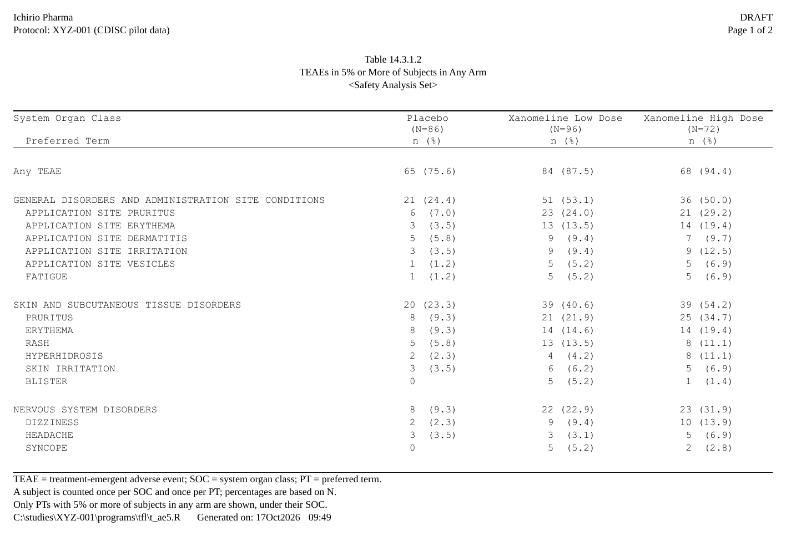
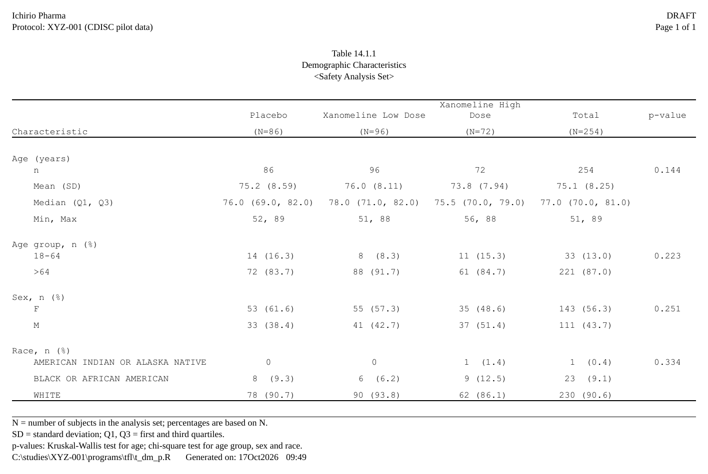
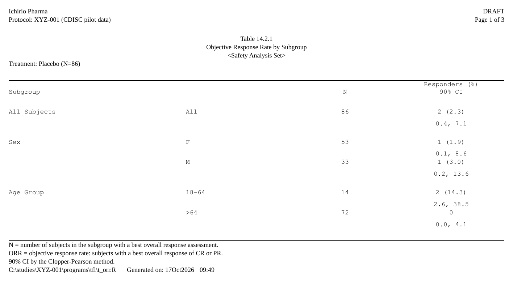

rtfreporter writes clinical tables, listings and figures (TFLs) as RTF files. Its two strengths are the two ways to get a table into a report:
- From an analysis results dataset (ARD), almost as-is – the recommended path. The statistics come from cards / cardx; a few lines say how they are laid out. This is what the rest of this page shows.
-
Bring your own table – it reads the table objects
you already have: a table built with gt, gtsummary (a
tbl_splittoo), rtables / tern, rlistings, tfrmt, flextable, huxtable or a plain data frame goes in throughas_rtftables(). See the end of this page.
From an ARD, rtfreporter takes three steps: the table, straight from the ARD, the report around it (the document, its running header and footer), and the RTF file.
|
The ARD made with cards / cardx |
1. The tableard
|>normalize_ard() |>table_plan()
|>plan_*()
|
2. The reportrtf_document()
|>rtf_section()
|>rtf_tables(plan)
|
3. The RTF filegenerate_rtfreport()
|
A table brought from another package skips step 1:
rtf_tables() takes it as it is.
This page is the shortest way through the three steps. Each of them in detail – the roles, the cells, the header, and more tables – is in Tables from an ARD.
The table this page writes:

The code is folded under Show code below each step.
The input: an ARD
The ARD is made before rtfreporter, with cards and cardx. That is data preparation, the analysis itself, and outside rtfreporter: see their documentation for the statistics they compute. rtfreporter starts from the ARD as given and changes no number in it.
The example data is the CDISC pilot ADSL that cards
ships. The ARD summarises age, tabulates age group and sex, and does
both by arm. ard_stack(.by = ) also counts the subjects in
each arm. rtfreporter reads those counts for the (N=xx) in
the column header, so nobody types them.
Show code
adsl <- cards::ADSL
adsl$ARM <- factor(adsl$ARM,
levels = c("Placebo", "Xanomeline Low Dose",
"Xanomeline High Dose"))
ard <- ard_stack(
adsl, .by = ARM,
ard_summary(variables = AGE),
ard_tabulate(variables = c(AGEGR1, SEX)))A few of its rows, one statistic a row:
| group1 | group1_level | variable | variable_level | stat_name | stat |
|---|---|---|---|---|---|
| ARM | Placebo | AGE | N | 86 | |
| ARM | Placebo | AGE | mean | 75.2 | |
| ARM | Placebo | AGE | sd | 8.59 | |
| ARM | Placebo | SEX | F | n | 53 |
| ARM | Placebo | SEX | F | p | 0.616 |
| ARM | Placebo | SEX | M | n | 33 |
| ARM | Placebo | SEX | M | p | 0.384 |
1. From the ARD straight to a table
The plan starts from the ARD. table_plan() names the
roles: the key that goes across (cols) and
the keys that go down (rows). Each plan_*()
verb then adds one declaration; nothing runs until the plan is used.
Show code
p <- ard |>
normalize_ard() |>
table_plan(cols = "ARM", rows = c(group = "variable")) |>
plan_cells(
continuous = c("n" = "{N:.0f}",
"Mean (SD)" = "{mean:.1f} ({sd:.2f})",
"Median" = "{median:.1f}",
"Min, Max" = "{min:.0f}, {max:.0f}"),
categorical = "{n:.0f} ({p:.1f%})",
notes = FALSE) |>
plan_labels(c(AGE = "Age (years)",
AGEGR1 = "Age group, n (%)",
SEX = "Sex, n (%)")) |>
plan_levels(AGEGR1 = c("<65", "65-80", ">80"), SEX = c("F", "M")) |>
plan_col_header(values = list(n = TRUE), rtf_col_header(
c("", "{col}"),
c("Characteristic", "(N={n})"))) |>
plan_stub(name = "row_label") |>
plan_blanks(where = "between_groups", first = TRUE) |>
plan_columns(widths = c(4, 2, 2, 2)) |>
plan_style(border = "tfl", align_count_pct = TRUE)What each verb says, and the names a plan can use: step 1 of Tables from an ARD.
2. The report: rtf_document() to
rtf_tables()
The report is the document around the table. The running header and
footer are small tables of rows, each with a left, centre and right
cell: the study and the page number, then the table’s number, title and
population at the top; its footnotes, then the program and the run date
and time at the bottom. {PAGE} /
{TOTAL_PAGES}, {PROGRAM_FULL} (the program’s
full path) and {DATETIME} are filled in when the file is
written; {STUDY} is a token of our own, given once to
rtf_document(tokens = ).
Show code
doc <- rtf_document(
program = "/studies/XYZ-001/programs/tfl/t_dm.R",
tokens = list(STUDY = "XYZ-001")) |>
rtf_section(
header = rtf_header(list(
c(l = "Ichirio Pharma", r = "DRAFT"),
c(l = "Protocol: {STUDY} (CDISC pilot data)", r = "Page {PAGE} of {TOTAL_PAGES}"),
c(c = ""),
c(c = "Table 14.1.1"),
c(c = "Demographic Characteristics"),
c(c = "<Safety Analysis Set>"))),
footer = rtf_footer(list(
c(l = "N = number of subjects in the analysis set; percentages are based on N."),
c(l = "SD = standard deviation."),
c(l = "{PROGRAM_FULL} Generated on: {DATETIME}")))) |>
rtf_tables(p)rtf_tables() takes the plan as it takes any table and
runs it. Long tables are paged by the plan
(plan_paginate_rows()), and the header repeats on every
page.
3. The RTF file: generate_rtfreport()
generate_rtfreport(doc, "t_dm.rtf", overwrite = TRUE)More tables from the same steps
Each of these is one ARD and one table’s code in Tables from an ARD; the verbs named are
the lines that differ from the table above. They use pharmaverseadam‘s
safety population, so the arms’ N differ from those of cards’
ADSL.
-
Adverse events by SOC and PT:
ard_stack_hierarchical(),normalize_ard(hierarchy = ),plan_sort()by frequency within each SOC, pages broken between SOCs.
The first page of an adverse-events table: the running header with the study and the page number, the title block, “Any TEAE”, then Cardiac disorders and its preferred terms, most frequent first, each as n (%) by arm with (N=xx) in the column header. -
Only the common terms, SOCs by frequency:
plan_filter(p >= 0.05)andplan_sort("-n@SOC", ...).
Adverse events in 5% or more of subjects: Any TEAE, then General disorders, Skin and subcutaneous tissue disorders and the other SOCs, most frequent first. -
A Total column and a p-value:
plan_total()andplan_compare().
Demographics with Placebo, the two Xanomeline arms, a Total column and a p-value column; the p-value sits on the first row of each characteristic. -
Subgroups, a section per arm:
normalize_ard(stack = ),plan_stat_groups()andplan_paginate_rows(page_by = , heading = ).
Objective response rate by subgroup for Placebo (N=86): All Subjects, Sex and Age Group with N and Responders (%) with the 90% CI below.
Where next on this path
- Tables from an ARD – the same steps in more depth: quartiles, an adverse-events table sorted by frequency within a SOC / PT hierarchy and filtered, a Total and a p-value column, and subgroups with a section per arm.
-
The plan verbs – every
plan_*()verb, grouped by job, and the rule that a later layer wins. -
widen_ard()– the ARD half of a plan in one call, giving a data frame now instead of a plan to run later. -
plan_template()– reads an ARD and writes a starting plan to edit. -
rtfreporter_ai_manual(dir, ard = )– a folder to give an AI assistant: the manual, three complete programs and your ARD’s shape, so it writes a plan for the version you have. - Rendering, post-processing and assembly – the outputs joined into one deliverable: a cover page, a linked table of contents and a bookmark per output, which Word and LibreOffice turn into PDF bookmarks when they export it.
-
Headers, footers and tokens –
{PROGRAM_FULL},program_fallback,drop_empty_rowsand tokens of your own.
Bring your own table
When the table is already built – by gt, gtsummary, rtables / tern,
tfrmt, flextable, huxtable, or as a data frame –
as_rtftables() reads it, including its labels, spanning
headers and footnotes where the source has them, and gives
rtftable pages for the same rtf_tables():
A data frame carries no labels of its own, so they are given on
rtftable(). Here the numbers – and the arms’ N in the
header – are computed from the data, not typed in:
Show code
adsl <- cards::ADSL
n <- table(adsl$ARM)
age <- tapply(adsl$AGE, adsl$ARM,
function(x) sprintf("%.1f (%.2f)", mean(x), sd(x)))
df <- data.frame(Parameter = "Age, mean (SD)", t(as.vector(age)))
doc2 <- rtf_document() |>
rtf_tables(rtftable(df, border = "tfl", col_header = rtf_col_header(
c("", sprintf("%s\n(N=%d)", names(n), as.vector(n))))),
titles = c("Table 1", "A table brought as a data frame"))
generate_rtfreport(doc2, "t_byo.rtf")See Importing tables with as_rtftables(), From gt and gtsummary, From rtables and tern, and the same report, every framework articles for demographics and adverse events.
Listings and figures
- Listings: Listings with a plan and Listings end to end.
- Figures: From a plot object to a page.
- Joining finished files into one deliverable with a table of contents: Rendering, post-processing and assembly.